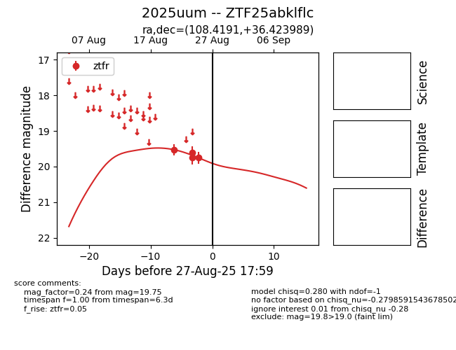

Target 2025uum at 2025-08-27 17:59, see:
FINK: fink-portal.org/ZTF25abklflc
Lasair: lasair-ztf.lsst.ac.uk/objects/ZTF25abklflc
ALeRCE: alerce.online/object/ZTF25abklflc
TNS: wis-tns.org/object/2025uum
YSE: ziggy.ucolick.org/yse/transient_detail/2025uum
alt names
ZTF25abklflc (ztf,fink)
2025uum (tns,yse)
coordinates:
equatorial (ra, dec) = (108.4191,+36.42399)
galactic (l, b) = (181.3217,+19.88436)
photometry
last ztfr=19.75
4 ztfr detections
